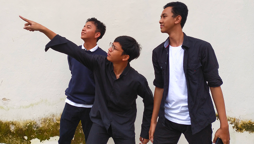
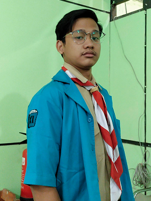
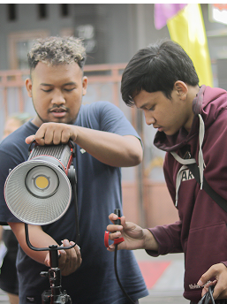

Bonaventura
Alvin Ardian
Saya adalah seorang kreator konten dan desainer yang berfokus pada integrasi teknologi dalam produksi digital, mulai dari pembuatan video berbasis AI hingga pengembangan web menggunakan HTML, CSS, dan JavaScript. Memiliki pengalaman teknis yang kuat di bidang audio visual gereja (AVISA) dan Komsos, saya ahli dalam mengelola sistem broadcast, dokumentasi fotografi, hingga operasional live streaming yang kompleks. Dengan kombinasi keahlian teknis operasional dan pemanfaatan alat AI modern, saya berkomitmen untuk menciptakan solusi visual dan digital yang inovatif, fungsional, serta estetis.
Kontak Saya

